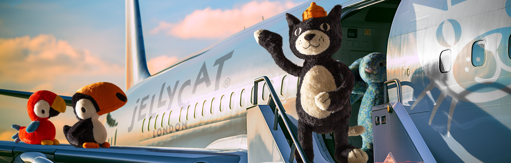

About Us
Our Story
For a quarter of a century, we have shared the joy of Jellycat toys with people of all ages, across the globe. Over this time, our unmistakable characters have gained the affection of millions – and center stage in many of the most prestigious stores across 77 countries.
Our designers play until something magical and unexpected happens – and a new character is born! We source beautiful materials that are noticeably softer, subtler and long-lasting.
History of Jellycat
Jellycat was founded in the UK in 1999 by the Gatacre brothers, William and Thomas. The goal of Jellycat is to create simple, yet innovative soft toys with a distinctive charm. The brand quickly earned success from their products with its dedication to creating detailed, soft and adorable plush toys. Jellycat has a large and diverse cast of characters with lots of personality infused into each toy.
For over 25 years, Jellycat has continued to expand its collection of soft toys, introducing new characters and innovative designs. Today, Jellycat stands as a symbol of creativity, comfort and playfulness.